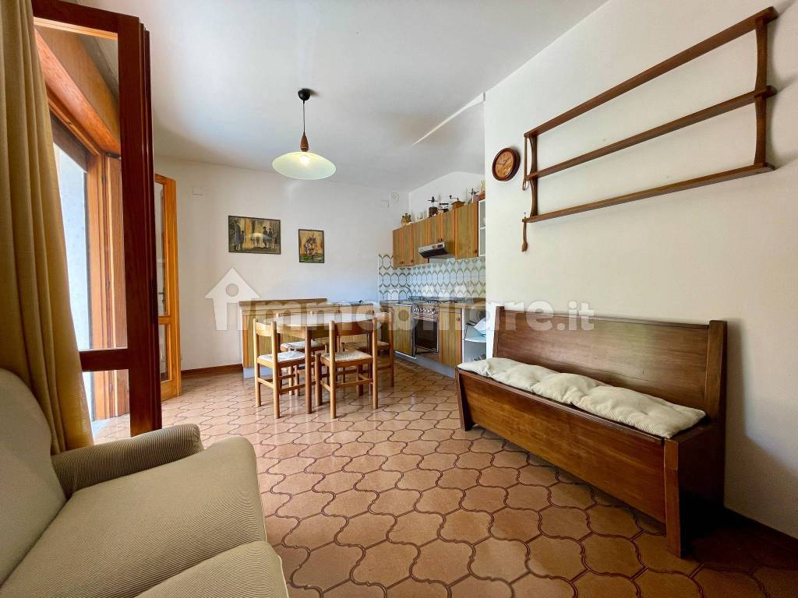

Quanto può valere
L’affermazione secondo cui con 295.000 € si acquisterebbe una villetta nuova in riva al mare a Bibione non trova conferma negli annunci selezionati. Esistono alternative competitive, anche più vicine alla spiaggia o rinnovate, ma ciascuna comporta differenze di superficie, giardino, indipendenza o posizione.
Questa è una valutazione comparativa degli annunci esaminati, limitata a Bibione: Lignano non entra nel confronto. I prezzi sono richieste dei venditori, non importi di compravendite concluse. La stima non sostituisce una perizia con sopralluogo e verifica dei documenti; non assegna una probabilità statistica di vendita.
Dove compare la villetta
La villetta di via del Leone 6 è stata individuata nei seguenti cinque collegamenti durante la ricerca: tre annunci diretti e due elenchi contenenti anche la sua inserzione.
Annunci diretti della villetta
- Immobiliare.it — scheda della villetta
- Idealista — scheda della villetta
- Casa.it — scheda della villetta
Elenchi in cui è stata individuata
- Wikicasa — ville con giardino a San Michele al Tagliamento
- TrovaCasa — ville bifamiliari con terrazzo a San Michele al Tagliamento
Gli ultimi due link aprono risultati di ricerca, non la singola scheda: posizione e presenza dell’inserzione possono cambiare. Per riconoscerla, fare riferimento a via del Leone, al prezzo richiesto di 295.000 € e alle fotografie. Le pubblicazioni riguardano lo stesso immobile e non sono cinque case diverse.
La villetta di via del Leone 6
Porzione di bifamiliare su due piani, proposta a 295.000 €, con giardino e due camere. L’annuncio di riferimento è quello di Passoni, codice SP-278. Apri annuncio.
| Caratteristica | Dato pubblicato | Come leggerlo |
|---|---|---|
| Abitazione | 66 m² su due piani | Superficie dell’alloggio distinta dal totale commerciale. |
| Superficie commerciale | 98 m² | Comprende quote di giardino, terrazze e parcheggio: non sono 98 m² interni. |
| Giardino | Circa 300 m² | Elemento distintivo rispetto alle alternative con piccoli scoperti o corte comune. |
| Camere e spese | Due camere; nessuna spesa condominiale dichiarata | I posti letto arredabili non equivalgono a camere aggiuntive. |
| Distanza dal mare | Circa 400 metri | Indicazione dell’annuncio, non percorso pedonale misurato. |
| Ampliamento | Possibilità dichiarata di 24 m² per piano | 48 m² potenziali da verificare tecnicamente, non superficie già disponibile. |

Cosa mostrano le fotografie
Il giardino, l’autonomia e la facciata riconoscibile in un contesto verde sono punti favorevoli. Cucina, rivestimenti del bagno, pavimenti e arredi hanno invece un’impronta datata: chi cerca finiture contemporanee può mettere in conto interventi. Anche il confronto con una casa semplicemente meglio presentata può incidere sulla percezione del prezzo.
Le fotografie non permettono di diagnosticare lo stato del tetto, degli impianti o eventuali infiltrazioni. L’ampliamento non viene valorizzato come se fosse già realizzato: prima servono fattibilità urbanistica, progetto e costi.
Le alternative entro 295.000 €
Queste proposte rispondono alla domanda concreta: che cosa può valutare chi ha un budget simile? Sono offerte pubblicizzate al momento della ricerca; disponibilità, condizioni e prezzo vanno riconfermati con l’agenzia.
| Immobile | Richiesta e caratteristiche | Confronto con via del Leone |
|---|---|---|
| Via Lira · Club dei Pini | 280.000 € Circa 450 m dal mare; 55,5 m² di abitazione, circa 80 m² commerciali (81 nell’intestazione); due camere e due bagni. Giardino 16,5 m², garage 14,6 m², due piscine. Spese annue dichiarate: 1.750 €. Apri annuncio | Bagno aggiuntivo, garage e piscine sono vantaggi. Via del Leone offre più superficie abitativa, giardino molto più grande e assenza di spese condominiali dichiarate. L’arredo appare più aggiornato, ma non è una villetta nuova. Non è nettamente superiore sotto ogni aspetto. |
| Via Cassiopea 40 | 258.000 € Circa 80 m dal mare; 55 m² dichiarati e due camere. Unità in quadrifamiliare, terrazza privata e corte condivisa; posto auto coperto numerato. L’annuncio indica interventi nel 2020 a bagno, tetto, grondaie, pavimentazione e impianto idraulico. Nessuna spesa condominiale dichiarata. Apri annuncio | È molto più vicina alla spiaggia, con lavori dichiarati e richiesta inferiore di 37.000 €. Ha però meno superficie e lo spazio esterno non equivale al giardino privato di 300 m². È un concorrente concreto per chi privilegia il mare. |
| Villa Timavo | 265.000 € Rinnovata nel 2024; 51 m² abitativi, 63 m² commerciali, due camere e un bagno. Giardino di circa 90 m²; nessuna spesa condominiale. Distanza dichiarata: 1.000–1.200 m dal mare, diversa tra i due annunci. Apri annuncio · Scheda agenzia | Finiture rinnovate, ma abitazione e giardino più piccoli e posizione sensibilmente più lontana dal mare. Confronto secondario utile per valutare il compromesso tra ristrutturazione e posizione. Il prezzo esaminato è 265.000 €; vecchi risultati di ricerca riportavano 280.000 €. |
| Via delle Galassie | 295.000 € 160 m² dichiarati su tre livelli, quattro camere, tre bagni, taverna, garage e giardino. Edificio del 1983, circa 1,3 km dal mare; classe E e riscaldamento a gasolio con caldaia indicata come recente. Apri annuncio | Molto più spazio e più locali allo stesso budget, ma più lontana dalla spiaggia. Non è una casa nuova sul mare. Il totale su tre livelli comprende ambienti accessori: non va confrontato direttamente con i soli 66 m² abitativi di via del Leone. |
Nuovo e vicinanza al mare: cosa cambia
| Proposta | Prezzo pubblicizzato | Significato del confronto |
|---|---|---|
| Blue Life · via Perseo 44 | Bilocali nuovi di 51–54 m² a 230.000–250.000 €; trilocali di circa 77 m² da 305.000 €, con offerte fino a 390.000 €. Classe A4. Apri annuncio | Il nuovo vicino al mare esiste sotto il budget, ma si tratta di appartamenti bilocali, normalmente con una camera, non di una bifamiliare con due camere e grande giardino. Per il trilocale la richiesta parte sopra 295.000 €. |
| Nuova villetta · Bosco Canoro 5 | 390.000 € Proposta come nuova costruzione, con giardino privato e vicinanza al mare dichiarata. Apri annuncio | È un riferimento di prezzo del nuovo, superiore di 95.000 € al budget. Stato di avanzamento e consegna devono essere verificati. Non prova che tutte le nuove villette abbiano questo valore. |
| Villa Romantica · Cassiopea 39 | 350.000 € Bifamiliare con giardino, due camere e circa 30 m dal mare. Anno 1965, abitabile; 58 m² nella scheda dell’agenzia, circa 60 sui portali. Apri annuncio | Molto vicina alla spiaggia, ma non nuova e comunque 55.000 € sopra il budget. Conferma l’importanza della posizione, senza offrire una prova di prezzi effettivamente realizzati. |
Esito: il budget di 290.000–295.000 € apre alternative valide a Bibione, ma nel campione non emerge una villetta nuova, con caratteristiche equivalenti e in riva al mare, acquistabile sicuramente a quella cifra. L’argomento può quindi essere troppo generico; la competitività del prezzo di via del Leone va giudicata sui singoli immobili.
Come si arriva alla stima
Non è stata calcolata una media indiscriminata al metro quadrato. Le superfici commerciali hanno composizioni differenti e le pertinenze non valgono quanto gli interni; inoltre distanza dal mare, giardino, stato e spese condominiali spostano l’interesse degli acquirenti.
Timavo a 265.000 € bilancia rinnovamento contro minori dimensioni e maggiore distanza. Via Lira a 280.000 € bilancia servizi e secondo bagno contro giardino ridotto e costi condominiali. Cassiopea a 258.000 € offre forte vicinanza al mare e lavori dichiarati, ma meno spazio e corte condivisa. Queste relazioni sostengono una fascia ragionata, non un valore esatto.
| Importo di chiusura | Lettura della stima |
|---|---|
| 265.000–270.000 € | Fascia concreta per una proposta seria e solida, da valutare considerando tempi e condizioni. |
| 275.000–280.000 € | Obiettivo centrale ragionevole, se presentazione, documenti e trattativa sono ben gestiti. |
| 285.000 € | Esito favorevole con un acquirente che attribuisce particolare valore a giardino e autonomia. |
| 295.000 € | Richiesta ambiziosa; non è l’esito principale atteso da questa analisi. |
Il periodo di circa un anno senza offerte soddisfacenti, riferito nel caso esaminato e non verificato indipendentemente, è un segnale: la combinazione di prezzo, presentazione e promozione non ha prodotto il risultato desiderato. Non dimostra da sola un valore di 250.000 €.
È stata riferita una proposta di 250.000 € complessivi, con 50.000 € fuori atto. Non essendo una compravendita conclusa, né una proposta dalle condizioni confrontabili con una vendita regolare, viene esclusa dai comparabili e non usata per fissare il valore.
Prima di cambiare prezzo: allineare gli annunci
La scheda Sirio a 295.000 € presenta una corrispondenza fotografica molto forte con la villetta analizzata e sembra riferirsi allo stesso immobile. Per prudenza è stata esclusa dal campione dei concorrenti. Apri annuncio.
Ci sono però differenze da chiarire: Sirio riporta 87 m² e due bagni, mentre Passoni indica 98 m² commerciali e un bagno. Il titolo Sirio usa “tricamere”, mentre la descrizione parla di due camere. La coincidenza dell’immobile e i dati corretti vanno confermati con le agenzie e la planimetria.
Queste incoerenze possono generare dubbi o far apparire immobili diversi. Prima di una nuova spinta commerciale conviene concordare una scheda unica con superficie interna, criterio della metratura commerciale, camere, bagni, pertinenze e distanza dalla spiaggia.
Una strategia di vendita concreta
- Valutare una richiesta di 285.000 €, con obiettivo di trattativa intorno a 275.000–280.000 €. È una proposta operativa derivata dal confronto, non una garanzia di realizzo.
- Esaminare seriamente un’offerta regolare di 270.000 €, negoziando verso 280.000 € e considerando affidabilità, tempi, eventuale mutuo e condizioni sospensive. Il prezzo non è l’unico elemento.
- Migliorare la presentazione: giardino ordinato, copriletti uniformi, ambienti luminosi e fotografie coerenti. Prima di spendere in una ristrutturazione, intervenire sugli aspetti che migliorano subito la leggibilità della casa.
- Documentare l’ampliamento, se effettivamente possibile, con un riscontro tecnico comprensibile e una stima dei costi. Un potenziale dimostrato è più credibile di metri quadrati soltanto promessi.
- Misurare le risposte delle agenzie: visite effettive, obiezioni ricorrenti e proposte scritte. Rivalutare il prezzo sulla base di questi segnali, evitando di considerare i soli prezzi degli annunci come vendite certe.
Il punto di equilibrio dell’analisi resta 275.000–280.000 €. La cifra di 270.000 € è credibile come possibile chiusura; la motivazione “con 295.000 € si compra nuovo in riva al mare” non è dimostrata dal campione osservato.
Fonti e limiti della ricerca
Analisi degli annunci consultati l’8 settembre 2026. Alcune schede possono essere datate e prezzi o disponibilità possono cambiare. Le distanze e le caratteristiche tecniche sono dichiarazioni degli inserzionisti, salvo le osservazioni fotografiche indicate. Nessun accesso a prezzi notarili di compravendite concluse.
Annunci e riferimenti14 collegamenti · ricerca su Bibione
- 01Villetta di riferimento · Immobiliare.ithttps://www.immobiliare.it/annunci/128963780/
- 02Villetta di riferimento · Idealistahttps://www.idealista.it/immobile/35674843/
- 03Villetta di riferimento · Casa.ithttps://www.casa.it/immobili/53955039/
- 04Elenco ville con giardino · Wikicasahttps://www.wikicasa.it/vendita-ville/san-michele-al-tagliamento/con-giardino/
- 05Elenco bifamiliari · TrovaCasahttps://www.trovacasa.it/ville-bifamiliari-in-vendita/san-michele-al-tagliamento/con-terrazzo
- 06Via Lira · Club dei Pinihttps://www.immobiliare.it/annunci/128583222/
- 07Via Cassiopea 40https://www.idealista.it/immobile/33089509/
- 08Villa Timavo · Idealistahttps://www.idealista.it/immobile/35798366/
- 09Villa Timavo · Europa REhttps://europare.com/immobili/villa-timavo/
- 10Via delle Galassiehttps://www.idealista.it/immobile/36347936/
- 11Blue Life · via Perseo 44https://www.casa.it/immobili/50339688/
- 12Nuova villetta · Bosco Canoro 5https://www.idealista.it/immobile/33681325/
- 13Villa Romantica · Cassiopea 39https://www.casa-mare.it/it/vendite/scheda.php?idstabile=40116
- 14Annuncio Sirio da riconciliarehttps://grupposirio.com/compra/226959-casa-in-bifamiliare-tricamere-con-ampio-giardino-recintato-bibione/
Il consiglio in poche parole
Proporre a 285.000 €, puntando a vendere a 275.000–280.000 €. Valutare seriamente un’offerta regolare di 270.000 €. Le alternative a 258.000–295.000 € offrono mare più vicino, rinnovi o più spazio, ma con compromessi. Giardino e autonomia sono i punti forti; 295.000 € resta ambizioso.